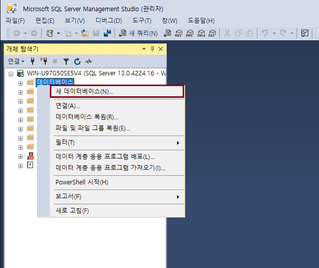
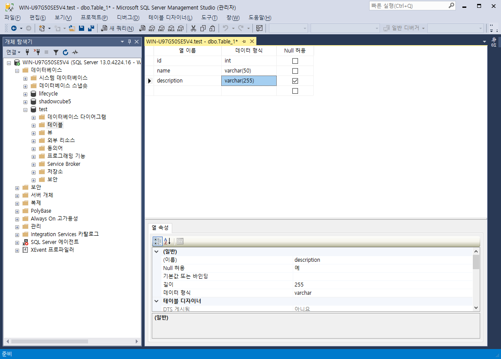

SQL Server 데이터베이스 구조
데이터베이스 구조
-
SQL Server 데이터베이스 구조에 대해서 알아보자.
데이터베이스 파일 유형
-
MDF 파일: 주 데이터가 저장되는 물리적 파일
-
NDF 파일: 보조 데이터 파일. 주로 다른 디스크에 배치하여 데이터를 분산하는 목적으로 사용
-
LDF 파일: Transaction Log 가 저장되는 물리적 파일
파일 크기
-
SQL Server 파일은 원래 지정된 크기에서 자동으로 증가할 수 있음
-
파일이 가득 찰 때마다 증분에 따라 크기가 늘어남
-
각 파일의 최대 크기를 지정할 수도 있음
-
새 공간에 파일이 할당될 때 오버헤드가 있음
-
한 파일 그룹에 여러 파일이 있을 경우 모든 파일이 가득 찰 때까지 파일은 자동으로 증가하지 않음
데이터베이스 생성 방법
-
데이터베이스 > 새 데이터베이스

-
데이터베이스 이름, 파일 크기 및 파일 경로 등을 지정
-
데이터베이스 > 테이블 생성
-
테이블 생성 화면

데이터 타입
Let's Prcactice
-
데이터베이스 생성 시, 파일 초기 크기, 증분 크기에 대해 설명해 보자.
처음으로
이전
다음